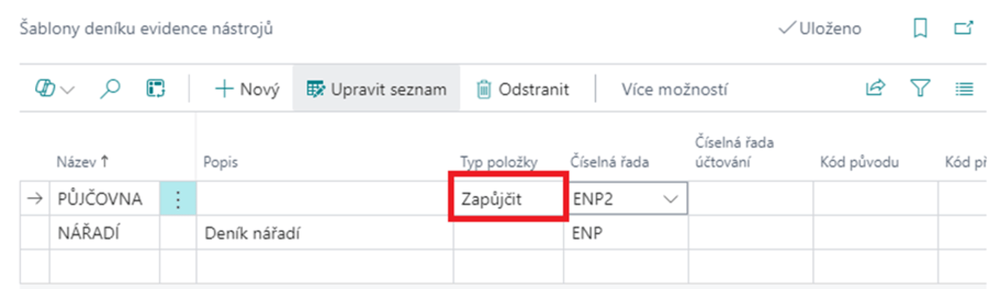

Evidence nástrojů a pomůcek - Nastavení
Aktualizace: 01.12.2024
Náš modul Evidence nástrojů a pomůcek řeší problematiku evidence nástrojů, pomůcek, forem a jiných potřeb, které jsou obvykle evidovány pomocí skladové evidence systému. Tento modul je postaven na základech evidence majetku a sjednocuje evidenci pro potřeby sledování dlouhodobého majetku a výrobní evidence, včetně půjčování nástrojů a pomůcek.
Pro plnohodnotné používání modulu je nutné je nastavit dle potřeb konkrétní společnosti. Níže jsou popsány jednotlivé části nastavení.
Šablony deníku evidence nástrojů
- Vyberte ikonu
 a do vyhledávacího pole zadejte Šablony deníku evidence nástrojů, poté vyberte související odkaz.
a do vyhledávacího pole zadejte Šablony deníku evidence nástrojů, poté vyberte související odkaz. - Otevře se stránka Šablony deníku evidence nástrojů.
- Klikněte na tlačítko + Nový pro vytvoření nové šablony.
- Do pole Název šablony zadejte název, který nejlépe vystihuje účel této šablony.
- V poli Výchozí typ položky vyberte typ položky, například Zapůjčit, pokud chcete, aby šablona sloužila pouze k evidenci zápůjček.
- Do pole Číselná řada dokladů zadejte nebo vyberte číselnou řadu, která bude použita k evidenci pohybů.
- Uložte šablonu kliknutím na tlačítko Uložit

Important
Je nutné vytvořit alespoň jednu šablonu deníku evidence nástrojů, aby bylo možné zadávat pohyby nástrojů.
Tip
Je možné mít jednu šablonu pro všechny typy pohybů, tedy šablonu, kde při vytvoření nezadáte žádný Výchozí typ položky.
Přidání číselné řady
- Klikněte na pole Číselná řada.
- Otevře se stránka Číselné řady.
- Klikněte na tlačítko + Nový pro vytvoření nové číselné řady.
- Do pole Kód zadejte jedinečný identifikátor pro číselnou řadu.
- Do pole Popis zadejte stručný popis, který vysvětluje účel číselné řady.
- Do polí Počáteční číslo a Poslední číslo zadejte počáteční a koncové číslo řady.
- Zaškrtněte pole Výchozí čísla, pokud chcete, aby systém automaticky generoval čísla v této číselné řadě.
- Uložte číselnou řadu kliknutím na tlačítko Uložit.

Nastavení typů položky evidence nástrojů
Každá šablona deníku může mít definovány kontroly povinných údajů. Postupujte podle následujících kroků:
- Vyberte ikonu a do vyhledávacího pole zadejte Nastavení typů položky evidence nástrojů poté vyberte související odkaz.
- Otevře se stránka Nastavení typů položky evidence nástrojů.
- Klikněte na tlačítko + Nový, čímž vytvoříte nový řádek pro daný typ položky.
- Vyberte typ položky. Na výběr jsou následující možnosti:
- Příjem – zařazení evidovaného množství nástroje.
- Výdej – vyřazení nástroje z evidence.
- Zapůjčit – evidence zapůjčení nástroje.
- Vrátit – evidence vrácení zapůjčeného nástroje.
- Pro každý typ položky nastavte povinné údaje, které bude nutné vyplnit v deníku nástrojů.
Note
Povinné údaje pomáhají zajistit správnost záznamů v deníku a odpovídající evidenci nástrojů.
Nastavení typů poškození
Nastavení typů poškození slouží k rozlišení poškozených evidovaných kusů. Tyto informace mohou být využity pro případné náhrady ze strany zaměstnanců, kteří poškozené nářadí vrací, nebo pro pozdější statistické vyhodnocování.
- Vyberte ikonu a do vyhledávacího pole zadejte Typy poškození následně vyberte související odkaz.
- Otevře se stránka Typy poškození.
- Pro přidání nového typu poškození klikněte na tlačítko + Nový.
- Vyplňte následující pole:
- Kód – jedinečný kód pro typ poškození.
- Popis – slovní popis poškození.
- EAN – čárový kód, který je možné použít při práci se čtečkami čárových kódů.
- Vyplňte pole dle potřeby a uložte nastavení.

Note
Správná definice typů poškození umožňuje přesnější evidenci a lepší analýzu stavu nástrojů v budoucnosti..
Viz také